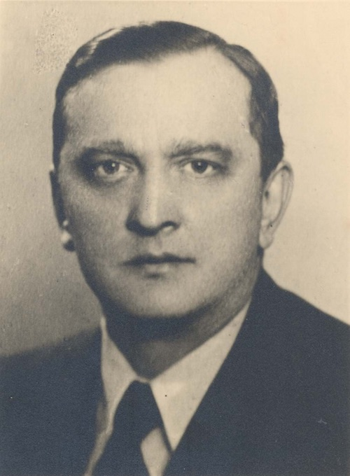

Stefan Banach [30 mars 1892 (Cracovie) - 31 août 1945 (Lvov)]
Banach est un mathématicien polonais qui a posé les bases de l'analyse fonctionnelle. Il est né à Cracovie en 1892, en Autriche-Hongrie (actuellement en Pologne). Il porte le nom de sa mère, qui l'abandonne quelques jours après sa naissance. Son père, S. Greczek, est un soldat au service de l'empire austro-hongrois et Banach est élevé par diverses personnes de l'entourage de son père. Il fait ses études secondaires à Cracovie ; il se révèle particulièrement brillant en mathématiques et en sciences naturelles, mais son désintérêt pour les autres matières l'empêche d'obtenir les meilleures mentions.
À la sortie du lycée, son père lui signifie que désormais il ne subviendra plus à ses besoins. Banach, pensant qu'il n'y avait rien à découvrir en mathématiques, choisit de faire des études d'ingénieur à la faculté des techniques de Lvov (ville autrichienne jusqu'en 1918, polonaise entre 1919 et 1939, et actuellement Ukrainienne), vivant grâce au tutorat. Pendant la première guerre mondiale, Banach, à la vue trop faible de l'oeil gauche, est dégagé des obligations militaires, et il retourne à Cracovie où il gagne sa vie en donnant des cours. Il en profite également pour assister aux lectures mathématiques de l'université de Cracovie (on soupçonne qu'il ait pu assister à des lectures de Zaremba).
La vie (au moins mathématique) de Banach va basculer au printemps 1916, quand il rencontre Steinhaus à Cracovie. L'anecdote est restée célèbre. Se promenant dans un parc, Steinhaus aurait entendu les mots "mesure de Lebesgue" échangés par deux jeunes gens : il s'agissait de Banach et de Nikodym. Steinhaus aurait alors posé une question sur les séries de Fourier que Banach résout en quelques jours. C'est le début d'une longue et fructueuse collaboration.
Banach retourne à Lvov en 1920 où un poste d'assistant lui est proposé. Cette même année, il épouse L. Braus, rencontrée grâce à Steinhaus. La communauté mathématique de Lvov (Banach, Steinhaus, Mazur, Ulam,...) a ses habitudes au Café Écossais où elle se retrouve chaque jour pour échanger et travailler ensemble. Les résultats, questions et anecdotes sont consignés dans un cahier, le Scottish Book. Cette atmosphère de travail sied à Banach qui est, avec Fréchet, le fondateur de l'analyse fonctionnelle. C'est dans sa thèse qu'apparaissent pour la première fois la notion d'espace de Banach, qu'y sont démontrés les théorèmes fondamentaux sur ces objets, qu'on y évoque la topologie faible...
En 1929, il fonde avec Steinhaus la revue mathématique Studia Math, consacrée au développement de l'analyse fonctionnelle, et en 1939 il est élu président de la société mathématique de Pologne. Pendant l'occupation nazie, Banach, privé de toute activité d'enseignement, gagne sa vie en nourissant des poux dans un institut allemand de recherche sur les maladies infectieuses. À la fin de la guerre, il se prépare à reprendre ses activités, mais un cancer du poumon l'emporte en août 1945.
Outre Steinhaus, Banach fit de nombreuses rencontres mathématiques fructueuses. Citons, entre autres, Sobolev et Kuratowski. De nombreux théorèmes sont associés au nom de Banach, qu'il les ait démontrés lui-même, ou qu'ils fassent référence à ses idées. Citons entre autres : le théorème de Hahn-Banach de prolongement des formes linéaires continues, le théorème de Banach-Steinhaus, de Banach-Alaoglu, le théorème du point fixe de Banach, ainsi que le paradoxe de Banach-Tarski.